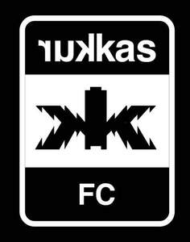

Trade Mark Journal No.2025/039 26 September 2025
UK00004264634 16 September 2025 (9,18,25,26,28,35,38,41,42,45)

- Class 9
- Media content; Recorded media.
- Class 18
- Shoe bags.
- Class 25
- Football jerseys; Football shirts; Football shoes; Football boots; Soccer shirts; Replica football kits; Football boots (Studs for -); Soccer shoes; Soccer boots; Soccer bibs; Sports shirts; Sport shirts; Sports caps; Sports socks; Clothing; Jackets [clothing]; Knitwear [clothing]; Ready-to-wear clothing; Headbands [clothing]; Jerseys [clothing]; Denims [clothing]; Shorts [clothing]; Clothing for sports; Sports clothing; Clothing for babies; Clothing for infants; Sneakers; Sneakers [footwear]; Shoes; Uppers (Footwear -); Pumps [footwear]; Running shoes; Shoes for casual wear; Footwear for sports; Sports footwear; Footwear for sport; Footwear for men.
- Class 26
- Laces for shoes.
- Class 28
- Footballs.
- Class 35
- Retail services connected with the sale of clothing and clothing accessories.
- Class 38
- Delivery of messages by audiovisual media; Delivery of messages by electronic media.
- Class 41
- Organisation of football competitions; Organisation of sports events in the field of football; Football academy services; Entertainment in the nature of football games; Organization of soccer games; Sports coaching; Organising of football events; Coaching in the field of sports; Organization of soccer competitions; Soccer camps; Football pools services; Sports refereeing; Training of sports players; Hosting of fantasy sports leagues; Arranging of soccer games; Entertainment in the nature of soccer games; Sports training; Training in sports; Tuition in sports; Provision of entertainment services through the media of television; Publication of texts in the form of electronic media.
- Class 42
- Electronic storage of entertainment media content; Conversion of images from physical to electronic media.
- Class 45
- Online social networking services.
IE7 Ltd